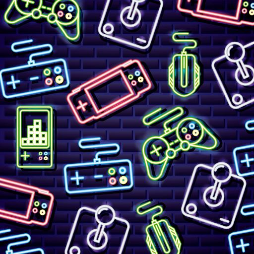

Retro Games
The home of vintage videogames. Retrogames is the biggest website for classic console and retro computer games in the world.So whether you're a Retrogamer or a game collector bookmark Retro Games.
We are living in a golden age of gaming, with an incredible range of interactive experiences to suit every taste. Even so, it’s hard not to occasionally pine for the simpler days of the arcade era, where the best retro games - those fantastic 8-bit and 16-bit titles - turned us into the healthy, sleep-shirking addicts we are today.
When old is gold, these are the best retro games that make us misty eyed.